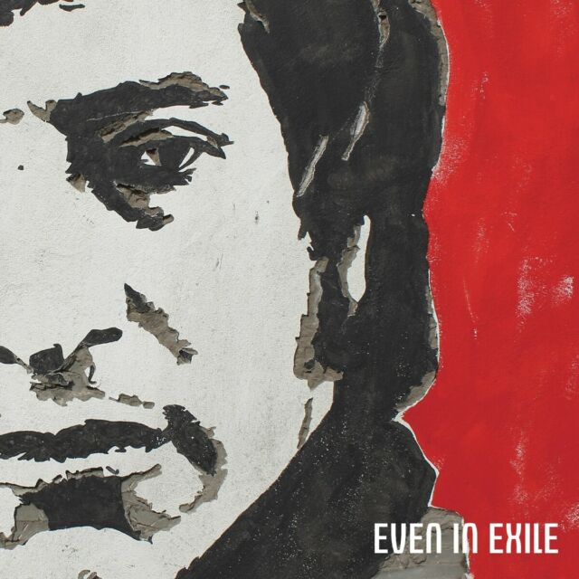
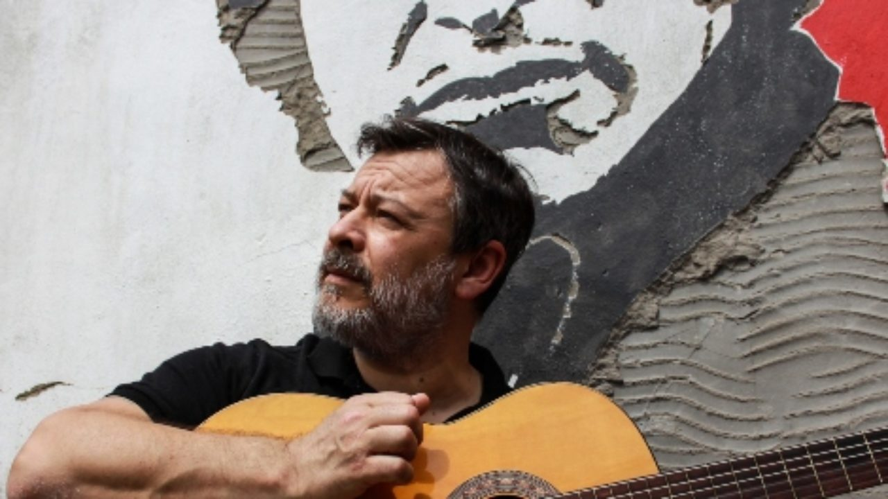

"Even in Exile" es una colección de canciones originales inspiradas por la vida y obra del cantautor chileno, un álbum que en la semana de su lanzamiento alcanzó el primer puesto en el ranking de álbumes independientes británicos. El disco es el segundo trabajo solista de James Dean Bradfield y el primero en lengua inglesa con todas canciones originales inspiradas por la vida del trovador.
El cantante de Manic Street Preachers, James Dean Bradfield, editó "Even in exile", un disco basado en la vida y la obra del cantautor chileno Víctor Jara, informó el diario argentino Página 12. Los galeses componen una de las bandas británicas más políticas de la escena local, conocida por ser la primera banda de rock que tocó en Cuba.
"Even in Exile" es una colección de canciones originales inspiradas por la vida y obra del cantautor chileno, un álbum que en la semana de su lanzamiento alcanzó el primer puesto en el ranking de álbumes independientes británicos. La obra es el resultado de un trabajo de dos años que nació a partir de una serie de textos del poeta y dramaturgo Patrick Jones, hermano de Nicky Wire, bajista de los Manics y fan de Jara, según el medio trasandino.
Bradfield era todavía un adolescente cuando escuchó el nombre de Víctor Jara en una canción de The Clash. Corría 1984 en Blackwood, uno de los tantos pueblos mineros del sur de Gales arrasados por las políticas neoliberales de Margaret Thatcher. El disco es su segundo trabajo solista y el primero en lengua inglesa con todas canciones originales inspiradas por la vida de Víctor Jara. La obra fue acompañada en su lanzamiento por Inspired by Jara, un podcast de tres episodios donde Bradfield repasa la vida de Víctor Jara y entrevista a artistas de diferentes disciplinas inspirados por el cantautor y director de teatro chileno, desde la actriz Emma Thompson al coreógrafo Christopher Bruce o el cantautor Joey Burns de Calexico.
“La obra de Jara es de una belleza diferente a todo”, cuenta Bradfield en el podcast. “Con los años se convirtió en una guía a seguir en todo el mundo, un tipo que creó una obra fascinante en un período en Sudamérica donde la derecha se manifestaba con mucha violencia. Y aun cerca de su final, cuando ya sospechaba todo lo que se venía, su música seguía siendo algo lleno de gracia. Eso realmente me impresionó. Me enseñó que siempre hay algo nuevo para hacer con una canción”.
Página 12 destaca que el disco "se inscribe en una larga tradición de homenajes que Víctor Jara recibió en los últimos cuarenta y siete años en todo el mundo, desde un ballet creado por un coreógrafo británico a una ópera rock rusa, una biopic alemana, composiciones y versiones de artistas belgas, turcos, japoneses, franceses, suecos, vascos, un festival galés de tres días de duración que cada dos años celebra su legado o incluso el nombre de un asteroide bautizado en su honor por un astrónomo soviético".
En Gran Bretaña y los Estados Unidos los homenajes al cantante se han multiplicado entre bandas y artistas tan populares como The Clash, Robert Wyatt, Joan Baez, Bruce Springsteen, Simple Minds, Peter Gabriel, Roger Waters o U2, y recientemente los Fleet Foxes incluyeron una canción llamada “Jara” en su flamante disco Shore.